広島県福山市にある
草戸稲荷に到着したのは夕闇迫る時間帯であった。
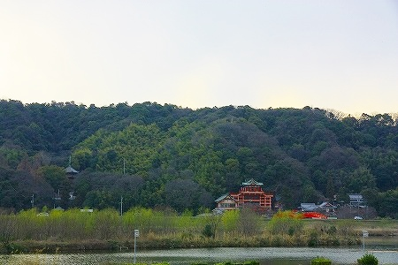
すぐ隣にあるのは国宝の五重塔と本堂を擁する
明王院（上写真左端に見えるのが国宝の五重塔）。
そんな広島屈指の名刹をスルーしてでも見たかったのがこの
キテレツな社殿なのだ。
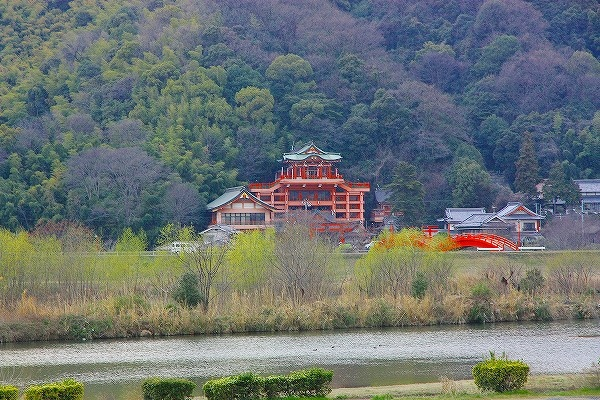
遥か遠くから見ても異様な様子が見てとれるだろう。
日本すきま漫遊記で見て以来、ずーっと気になっていた神社なのだ。
この神社の面白さに比べたら国宝の五重塔の訪問など
来世でもいいっす。
紅いビルの上に社殿が乗っているような強烈な外観だ。
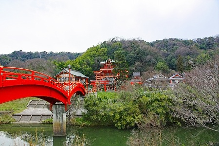
この神社の向かいに芦田川の中洲があり、かつてはたいそう栄えた町だったという。
今やその面影すらまるでない中州から太鼓橋を渡って草戸稲荷に迫っていく。
第一印象；
紅い！
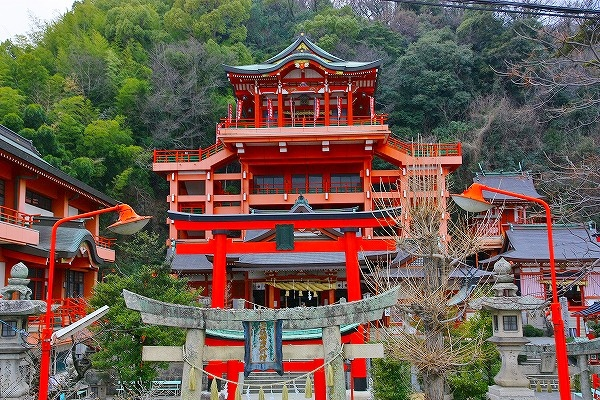
メインの社殿だけじゃあない。鳥居はもちろんのこと、社務所や末社、おまけに街灯まで朱色に染まっている。
陽も傾きかけかなり薄暗くなっていたが、そんな中でも毒々しいまでの朱色が周囲を圧倒し、ここが特別な場所であることをことさら誇示しているかのようであった。
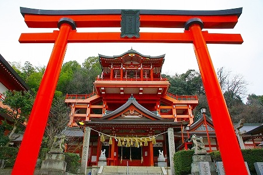
メインの社殿。
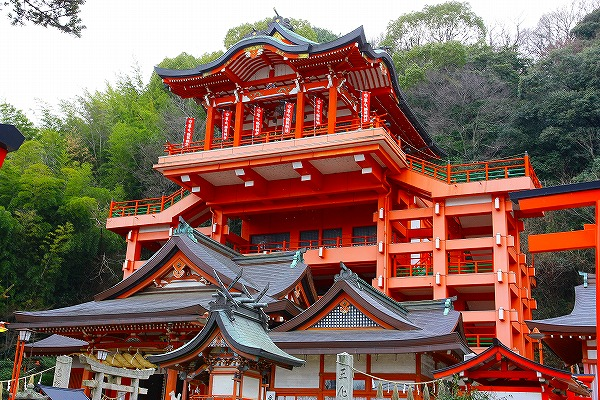
どうですかこの強烈ないでたち。
言葉のチョイスとしてはどうなのか疑問だが「畸形の建築」という言葉が真っ先に浮かんだ。
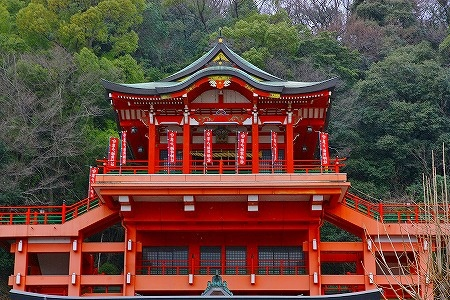
形式的にいえば鉄筋コンクリートによる四方懸造。
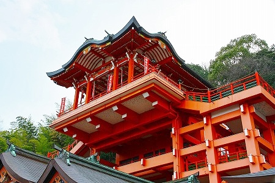
最上部の拝殿、本殿は伝統的なスタイルを踏襲しているだけに余計懸け造り部分であるコンクリートのフレームとのギャップが大きい。
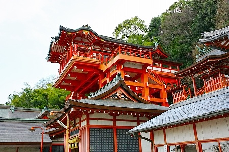
しかも
拝殿の一部がせり出しているぞ！
設計上の意図がよく判らなかったが、恐らく張り出した分だけより展望台として
スリリングで面白くね？ということなのかな。
それ以上に下から見上げるだけで充分スリリングなんですけど…。
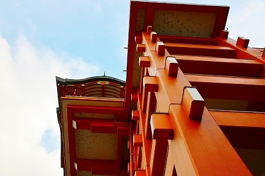
梁と柱の交差している部分はちゃあんと木造の懸け造りのようになっているのが味わい深い。
では登ってみますか…
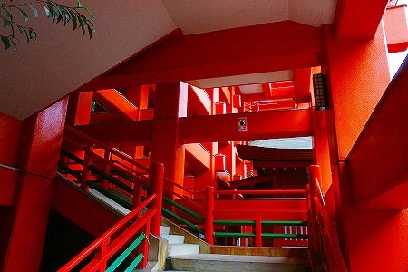
とココで驚愕の事実。
参拝時間過ぎてました〜！残念！
まあ、夕暮れ時期に訪れたんだから仕方がないか…。
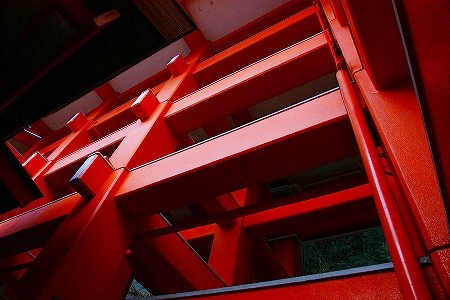
次は絶対陽の高い内に訪れることを密かに心に誓ったのであった。
それにしても特筆すべきはこの
懸け造りのフレームの中に参拝路があること。
日本すきま漫遊記のへりおす氏の言を待つまでもなく、この懸け造りのグリッドの中に参詣路を設けること自体が従来の社寺では特異な事例といえよう。
タイムオーバーした私はただただ拝殿の有り様を夢想しつつ指をくわえて上を見るばかりなのである。くううう〜〜。
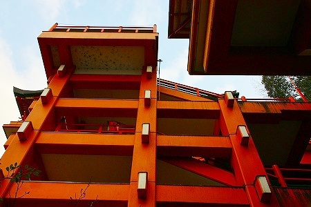
末社もこんな感じ。
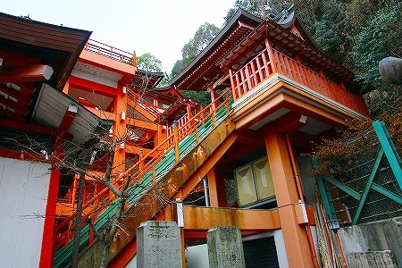
ムリクリ本殿と高さを揃えた結果、こんな事になっちゃいました。
そもそも本殿と拝殿をココまで高く持ち上げる必要性が良く判らないのだが（いや、もしかしたら本殿をこの高さに持ち上げること自体に凄く重要な意味があるのかもしれないが）、清水寺みたいだったらカッコ良くね？的なノリで作ったとしよう。まあ、百歩譲ってそこまでは判らなくもない。実際超カッコイイし。
でも小さい末社まで本殿の高さに合わせて高くするのはどうなんだろ。
本殿ほど大きくないのに高さだけは高レベル。
その結果、出雲大社の昔の本殿のように物凄く無理矢理高く持ち上げられたチグハグな社殿が現れたのだ。
こういう
一個一個の局面では正しいのに最終的にはよく判らない方向に突進していってしまっている本末転倒具合に私はたまらない愛着を感じるのである。
なぜならそういった現象の中に宗教が本来内包しているであろう
「いい加減さ」が感じられるからだ。
私はこの信仰上の
「いい加減さ」は凄く重要だと思っている。
それこそが
日本の宗教的土壌の立脚点なのではないか、と考えているから。
…まあ、詳しいハナシは追々するとしましょうか。
お稲荷さんだけに狐があちこちに。
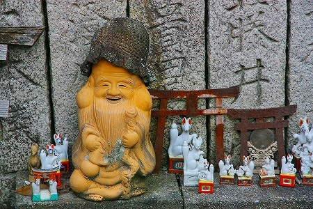
一説には初詣の参拝者数は広島県内でも2位だとか。
うむー。侮れぬぞ稲荷信仰。
そうそう。すきま漫遊記のレポートで一番気になっていたポイント！
「余談であるが巫女さんが美人であった」との件だけは検証せねば！（こんな話題でホントすいませんねえ）
ああ、社務所も閉まっててコレすら検証できませんでした。
全国の巫女マニアの皆々様、朗報をお伝え出来ずホントにスミマセンでした！
…つか勘弁できない御仁はご自分で確かめに行って俺に教えて下さい！
俺だってマジ知りたかったんだよー！
以上！